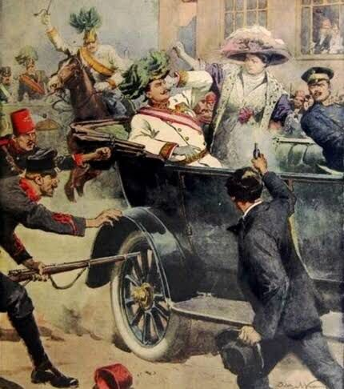
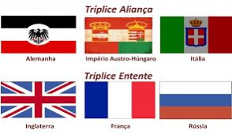
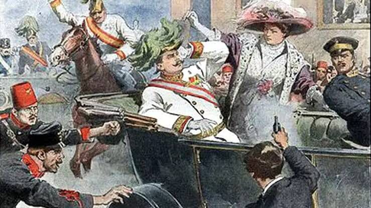
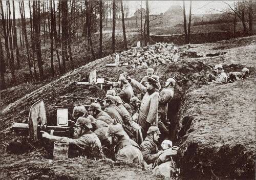
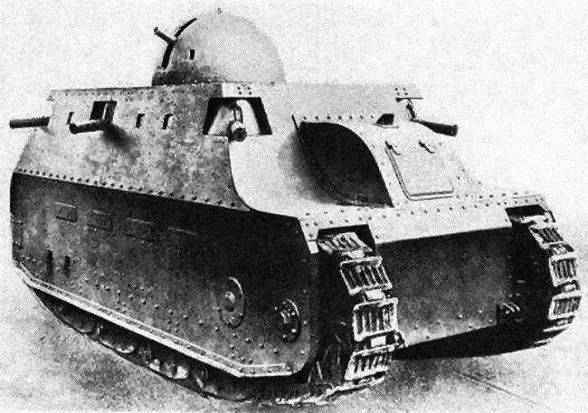
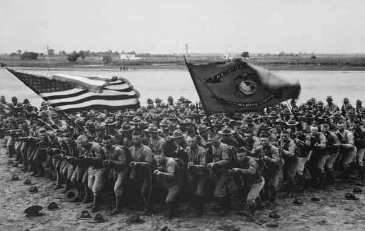
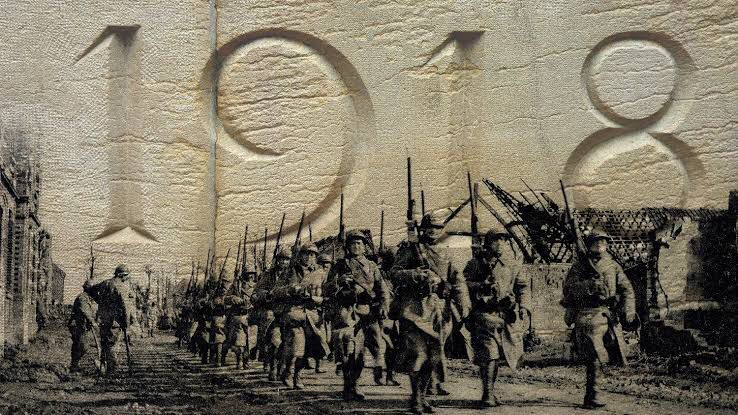

Ela começou principalmente por causa de rivalidades entre países europeus. Eles estavam brigando por terras, poder e influência.
Os países se juntaram em grupos, chamados alianças. Dois grandes grupos eram a Tríplice Entente (que incluía França, Reino Unido e Rússia) e as Potências Centrais (que incluíam Alemanha, Áustria-Hungria e outros).
Um evento crucial foi o assassinato do arquiduque Franz Ferdinand da Áustria em Sarajevo, que desencadeou a guerra.
Durante a guerra, as tropas ficavam encurraladas em trincheiras profundas, onde a vida era muito difícil.
A Primeira Guerra Mundial viu a introdução de novas armas, como tanques, aviões e armas químicas.
Os Estados Unidos entraram na guerra em 1917, ajudando as Potências da Entente.
Finalmente, a guerra terminou em 1918 com o Tratado de Versalhes, que impôs pesadas penalidades à Alemanha.
Foi uma guerra muito destrutiva que teve um grande impacto no mundo, incluindo o surgimento de novos países e mudanças significativas na política global.